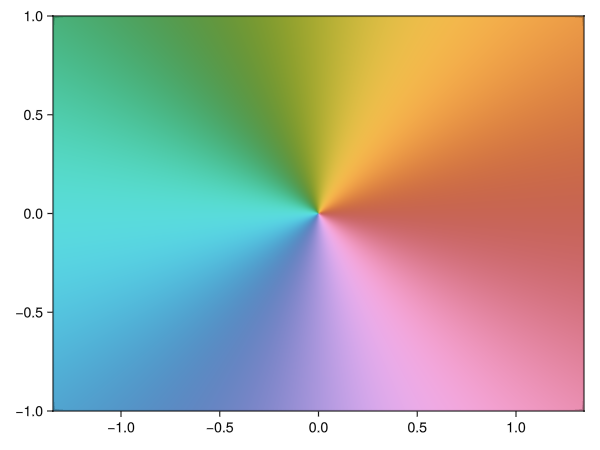
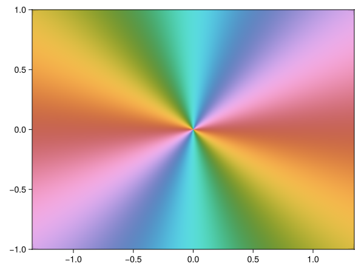
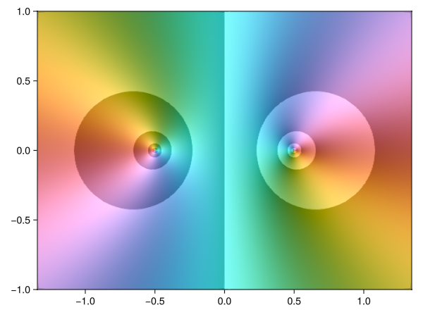
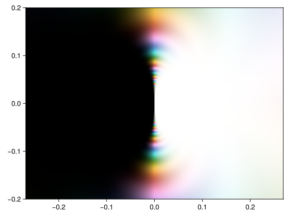
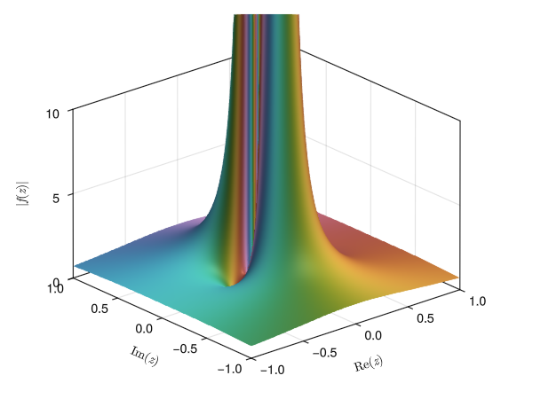
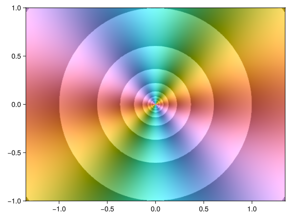
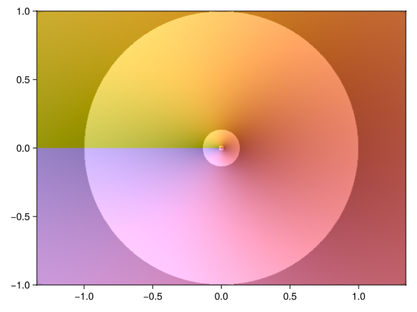
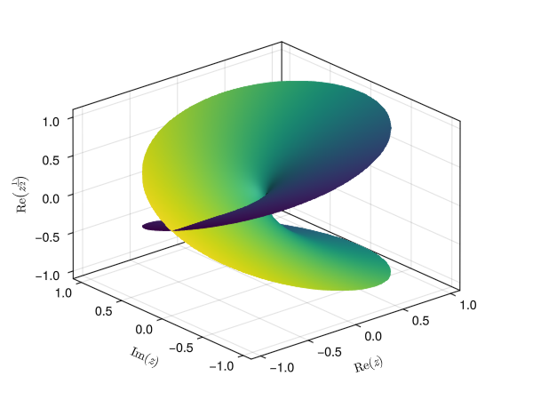
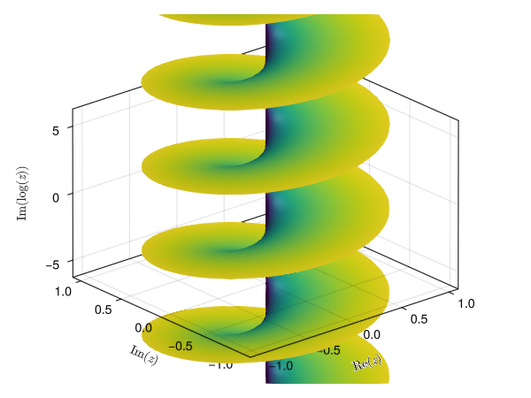
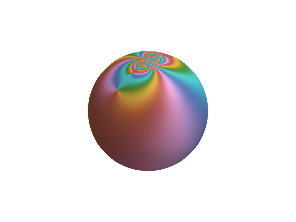

Guide
(This document is also available in PDF format.)
Installation
ComplexToys.jl is a collection of plotting tools to aid the study of complex analysis. It is implemented in Julia, a modern and—at least in the author's opinion—a rather pleasant language to use. No prior knowledge of Julia is needed to go through this document as concepts will be introduced where needed. If Julia is not yet installed on your system, you can use the usual method of your operating system or download it from https://julialang.org.
To install the plotting routines, you enter the following commands in the Julia REPL (read eval print loop).
Depending on the speed of your machine, this might take a while. Grab a cup of tea or coffee and take a minute to enjoy the outdoors. :-)
using Pkg
pkg"add ComplexToys"A first phase plot
To start producing plots, you first have to load the package you just installed with the using keyword.
using ComplexToysIn the remainder of this tutorial we will discuss several plots, starting with the phase plot (we will explain the name domaincolor in the next section). On such a plot, we display the phase, or argument, by painting $\arg z = 0$ red, $\arg z = \frac{\pi}{2}$ lime green, $\arg z = \pi$ cyan, $\arg z = \frac{3\pi}{2}$ purple, etc.
domaincolor(z -> z)
Note that a zero, going anticlockwise, is surrounded by red, green and finally blue. A pole on the other hand (below one of second order) reverses this order, giving red, blue and then green. This is a useful trick to quickly spot poles and zeroes on a phase plot, but be aware that this is only true if no complex conjugation is involved!
domaincolor(z -> 1/z^2)
Note the first bit of Julia syntax you will need: an anonymous function (a function you can easily pass as an argument) is written as z -> f(z), analogous to $z \mapsto f(z)$ in mathematics.
It is perhaps interesting to know that this reversal of the phase relates to the complex conjugate. The function $z \mapsto \frac{1}{z}$ is namely the composition of $z \mapsto \frac{1}{\bar{z}} = \frac{1}{|z|} e^{i\arg z}$ and $z \mapsto \bar{z} = |z| e^{-i\arg z}$. In the first step, the unit circle is turned inside out; the second step mirrors the image along the real axis.
This is easily seen by looking at the effect these steps have on a square, or algebraically by noting that only the final step modifies the phase.
domaincolor(z -> z, 2, box=(.4,.6+.2im,:white))
domaincolor(z -> 1/conj(z), 2, box=(.4,.6+.2im,:white))
domaincolor(z -> 1/z, 2, box=(.4,.6+.2im,:white))\[z \mapsto z\]
\[z \mapsto \frac{1}{\bar{z}}\]
\[z \mapsto \frac{1}{z}\]
In the above code, the second argument fixes the range of the axes. For the specific details about the box keyword argument we refer to the documentation (try: ? domaincolor, more on this later). Also note the use of im as imaginary unit in Julia.
We conclude by mentioning that these plots are interactive. Try, for instance, to explore the phase of the sine function with domaincolor(z -> sin(z)). Initially it looks very similar to the identity function of before, not unexpected when you remember its Taylor series. To get a better picture you can zoom in and out using the scroll wheel, or zoom to a region using left click and drag. The centre of the plot can be dragged around using the right mouse button. Finally, if you get lost, you can always reset the view using ctrl + left click.
Domain colouring and modular surfaces
Given that $z \mapsto \frac{1}{z}$ and $z \mapsto \bar{z}$ have identical phase, a phase plot alone is not always sufficient to study a function's behaviour. For this reason it is common to add contour lines of the magnitude (usually more specifically of its logarithm). The resulting figure is called a domain colouring (hence domaincolor). We can add the contours using the option abs=true. This way we can distinguish the pole (left, with increasing lightness between contours) and zero (right, with decreasing lightness between contours) in the below example.
domaincolor(z -> (conj(z) - .5)/(z + .5), abs=true)
Of course there are many variations on this idea. One could, for example, paint zero black and infinity white. This is for instance useful to illustrate the Casorati–Weierstrass theorem.
domaincolor(z -> exp(1/z), .2, abs=Inf)
Aside from what is illustrate here, many other options are available, for instance grid lines and colour vision deficiency friendly phase plots. For a list of all the available options you can consult a function's documentation using ?, for example:
? domaincolorThe 2D plots included in ComplexToys.jl are interactive version of those found in a different Julia package called DomainColoring.jl; visit their documentation for more information and examples.
Yet another way to represent magnitude and phase at the same time, is by moving the former to the third dimension, which results in a (painted) modular surface. Another essential singularity we can visualize is $z \mapsto \sin\left(\frac{1}{z}\right)$ near $0$.
modularsurface(z -> sin(1/z))
For this example—as with all other 3D plots—it is worthwhile to plot the figure yourself. This additionally allows you to rotate the plot.
Branch points and Riemann surfaces
When looking at the domain colouring of $z \mapsto z^2$ we see the same values appear twice in the complex plane.
domaincolor(z -> z^2, abs=true)
The inverse map $z \mapsto z^{\frac{1}{2}}$ will hence take two values in any given point. An exception is $0$, where the inverse map is unique. Such a point $z_0$ where a map has $n$ values (here $n=1$), but every neighbour has strictly more than $n$ values, is called a branch point (more precisely: every neighbourhood of $z_0$ has at least one point where the map takes at least $n+1$ values).
If we want to arrive at a single valued function, we will have to choose between one of the two values. The usual approach for a continuous function is to pick an arbitrary curve (the branch cut) connecting two branch points, and to require continuity everywhere except when crossing this curve. This results in a set of single valued functions (so called branches) which can be attached along this curve in a continuous fashion.
For $z \mapsto z^\frac{1}{2}$, the usual choice of branch cut is the negative real axis (connecting the branch points $0$ and $\infty$), as is also done in Julia. This is a result of the convention to use ${|z|}^{\frac{1}{n}} e^{i \frac{\mathrm{Arg}\,z}{n}}$ as the so-called \emph{principal value} of the $n$th root, with $\mathrm{Arg}\,z \in (-\pi, \pi]$ the principal value of the argument. Analogously, the principal value of the logarithm is given by $\mathrm{Log}\,z = \log |z| + i\,\mathrm{Arg}\, z$, which is of course compatible with the preceding.
domaincolor(z -> z^(1/2), abs=true)
Additionally, we could also try to make a plot of all the values at the same time. Note that this is a four dimensional object. For $w = f(z)$ we namely have $(\mathrm{Re}\,z, \mathrm{Im}\,z, \mathrm{Re}\,w, \mathrm{Im}\,w)$ as graph. (One can, of course, also use the phases and magnitudes.)
When we project this orthogonally on the first three components and colour the resulting surface according to the removed component, we get the following for $z \mapsto z^{\frac{1}{2}}$.
riemannpow(1//2)
Here 1//2 is Julia notation for the exact rational number $\frac{1}{2}$. On the negative real axis the graph seems to intersect itself, but this is merely an artefact of the chosen projection. The colour is in fact distinct. Note that indeed each point, except for the branch point $0$, has two distinct values.
We encourage you to play around with different rational numbers and to look what does (and what does not) change the number of values. Also try an irrational power; note that it never reattaches to itself, it takes an infinite number of values!
A 'simpler' example of a function that takes infinitely many values is $\log z = \log |z| + i\arg z$. Using a slightly different projection, we get a rather nice looking staircase.
riemannlog()
On the Riemann sphere
Finally, ComplexToys.jl is also able to plot a function on the Riemann sphere. Let us, to conclude, again look at the sine, with a zero at the origin (south pole) and an essential singularity at infinity (north pole).
riemannsphere(sin)